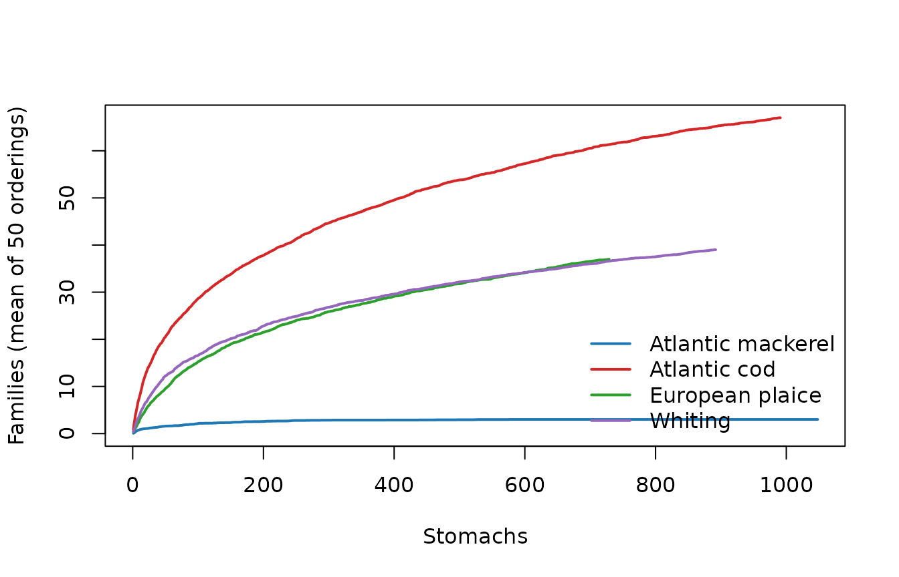

Case study: a complete analysis of public ICES stomach data
Source:vignettes/articles/case-study-ices.Rmd
case-study-ices.RmdThis article is a complete diet study, from the raw table to the figures, the tables and a dashboard, done only with DietView and a little base R. The data are real: a public extract of the ICES Stomach Content Database for fishes of the North Sea, the Skagerrak-Kattegat and the Baltic Sea. The question is simple and classical: what do the four best-sampled predators in this extract (Atlantic mackerel, Atlantic cod, European plaice and whiting) eat, how well do we know it, and how much do their diets overlap?
The sections follow the order of a real study. Each one opens with the question it answers. Every number in the text is computed by the code shown.
- The question and the data
- Checks and cleaning decisions
- Taxonomy
- Covariates
- The diet
- Figures
- Identification and digestion
- Comparisons within cod
- Sampling sufficiency
- Resolution-robust aggregation and diet overlap
- Outputs: dashboard, species cards, app
- What we learned, and the limits
library(DietView)
m4 <- c("Atlantic mackerel", "Atlantic cod", "European plaice", "Whiting")
pc <- function(x, d = 1) formatC(x, format = "f", digits = d) # format a %1. The question and the data
What is in the data, where does it come from, and how many fish were sampled?
Three tables ship with DietView. ices_diet has one row
per prey record, ices_stomachs one row per sampled stomach
(empty ones included), and ices_lineage the frozen WoRMS
classification of every prey. Source: ICES Stomach Content Database,
ICES, Copenhagen; extract distributed with the R package stomachr
(Lindmark 2026). See ?ices_diet for the details and the
corrections made when the tables were built.
c(records = nrow(ices_diet),
stomachs = length(unique(ices_diet$stomach_id)),
sampled = nrow(ices_stomachs),
predators = length(unique(ices_diet$predator_common)))
#> records stomachs sampled predators
#> 9639 4231 8886 22A stomach falls in one of three groups: it has prey records, it is flagged empty, or it has no record and no “empty” flag, so its content is unknown. The last group matters: it must not be counted as empty.
st <- ices_stomachs
st$status <- ifelse(st$stomach_empty %in% 1, "empty",
ifelse(st$stomach_id %in% ices_diet$stomach_id, "with prey",
"unknown"))
tab <- table(st$predator_common, st$status)
tab <- tab[order(-rowSums(tab)), c("with prey", "empty", "unknown")]
head(tab, 8)
#>
#> with prey empty unknown
#> Whiting 896 294 1195
#> European plaice 729 638 753
#> Atlantic cod 993 68 994
#> Atlantic mackerel 1051 3 0
#> Atlantic horse mackerel 135 61 97
#> European hake 106 32 149
#> Tub gurnard 90 22 9
#> Thorny skate 48 5 57
known <- tab[m4, "with prey"] + tab[m4, "empty"]
vac <- round(100 * tab[m4, "empty"] / known, 1)
vac
#> Atlantic mackerel Atlantic cod European plaice Whiting
#> 0.3 6.4 46.7 24.7Of the 8886 stomachs, 1197 are flagged empty and 3458 have an unknown
status. Among stomachs of known status, the share of empty stomachs
(vacuity) ranges from 0.3% (Atlantic mackerel) to 46.7% (European
plaice). This can only be computed from ices_stomachs: a
long prey table holds no empty stomachs.
The sampling is uneven in space and time, which will matter for every comparison:
table(st$region, st$year)
#>
#> 2020 2021 2022 2023 2024
#> Baltic Sea 33 0 180 233 264
#> North Sea 0 52 2195 1212 1755
#> Skagerrak-Kattegat 0 0 1027 820 1115
with(st[st$predator_common %in% m4, ], table(predator_common, year))
#> year
#> predator_common 2020 2021 2022 2023 2024
#> Atlantic cod 0 52 270 1419 314
#> Atlantic mackerel 0 0 1054 0 0
#> European plaice 0 0 0 0 2120
#> Whiting 33 0 1994 358 0
with(st[st$predator_common %in% m4, ], table(predator_common, quarter))
#> quarter
#> predator_common 1 2 3 4
#> Atlantic cod 1208 0 428 419
#> Atlantic mackerel 0 1054 0 0
#> European plaice 984 0 1136 0
#> Whiting 1262 0 1032 91Mackerel were sampled in a single year and quarter, plaice in a single year. Any contrast between predators is therefore also a contrast between years, seasons and places.
2. Checks and cleaning decisions
Is the table fit for DietView, and which records should count as diet?
Declare and validate
dv_spec() records which column plays which role.
dv_validate() checks the table against it and reports; it
does not repair.
spec <- dv_spec(
predator = "predator_common",
predator_latin = "predator_latin",
stomach = "stomach_id",
prey_id = "prey_aphia_id",
prey_name = "prey_name",
weight = "prey_weight_g",
count = "prey_count",
digestion = "digestion_label",
covariates = c("region", "year", "quarter")
)
v <- dv_validate(ices_diet, spec)
rep_raw <- attr(v, "dv_report")
unlist(rep_raw)
#> n_records n_stomachs n_predators
#> 9639 4231 22
#> n_single_record_stomachs n_missing_weight n_no_prey_key
#> 1595 622 0No error and no warning: every record has a prey key (an AphiaID or a name), weights are numbers and never negative, and stomach IDs are not shared between predators. The report also tells us that 1595 stomachs hold a single record and 622 records have no weight. Validation does not say whether a record is food; that is our decision.
Non-food items
table(ices_diet$item_type)
#>
#> non_food prey unidentified
#> 67 8019 1553
sort(table(ices_diet$prey_name[ices_diet$item_type == "non_food"]),
decreasing = TRUE)
#>
#> sand stone Plastic plastic wood
#> 47 14 4 1 1Sand, stones, plastic and the like are not diet. They are dropped.
Nematodes
Nematodes in fish stomachs are mostly parasites of the predator, not prey. Before dropping them, we look at how much they weigh in each predator’s records, because a decision that removes a large share of one predator’s records is not a detail.
phylum <- ices_lineage$phylum[match(ices_diet$prey_aphia_id,
ices_lineage$prey_aphia_id)]
is_nem <- phylum %in% "Nematoda"
nem <- tapply(is_nem, ices_diet$predator_common, mean)
nem_n <- tapply(is_nem, ices_diet$predator_common, sum)
round(100 * nem[m4], 1)
#> Atlantic mackerel Atlantic cod European plaice Whiting
#> 34.1 3.1 0.0 7.1Nematodes make 1042 records (10.8% of all), and 34.1% of mackerel records. Kept, they would make “Nematoda” one of the main prey of mackerel. They are dropped; an analysis of parasites would keep them and nothing else.
Pooled fish, missing digestion, missing weight
pooled <- unique(ices_diet$stomach_id[ices_diet$n_fish_pooled %in% 2])
length(pooled)
#> [1] 7
dig_missing <- tapply(ices_diet$digestion_label == "not recorded",
ices_diet$predator_common, mean)
round(100 * dig_missing[m4], 1)
#> Atlantic mackerel Atlantic cod European plaice Whiting
#> 83.4 23.3 14.9 12.87 stomach samples pool two fish. They are too few to change any share, so they are kept as stomachs. The digestion stage is “not recorded” for 33.7% of records overall, and for 83.4% of the mackerel records: the digestion diagnostic below says little about mackerel. Missing digestion is kept as its own level, not dropped. The 622 records without a weight are kept too: they count in the record and numbers views and add nothing to the weight view.
The cleaned table
dat <- ices_diet[ices_diet$item_type != "non_food" & !is_nem, ]
rep_clean <- attr(dv_validate(dat, spec, quiet = TRUE), "dv_report")The methods paragraph is generated from the counts, so it stays true if the data or the decisions change:
cat(sprintf(paste(
"We used %d prey records from %d stomachs of %d predator species",
"(ICES Stomach Content Database, %d-%d). %d non-food records and %d nematode",
"records (mostly parasites) were excluded. %d sampled stomachs were flagged",
"empty and %d had no record and no flag; these were excluded from diet",
"composition. %d records (%s%%) lacked a weight and %d (%s%%) a digestion stage."),
rep_clean$n_records, rep_clean$n_stomachs, rep_clean$n_predators,
min(dat$year), max(dat$year),
sum(ices_diet$item_type == "non_food"), sum(is_nem),
sum(st$status == "empty"), sum(st$status == "unknown"),
rep_clean$n_missing_weight, pc(100 * rep_clean$n_missing_weight / rep_clean$n_records),
sum(dat$digestion_label == "not recorded"),
pc(100 * mean(dat$digestion_label == "not recorded"))))We used 8530 prey records from 4222 stomachs of 22 predator species (ICES Stomach Content Database, 2020-2024). 67 non-food records and 1042 nematode records (mostly parasites) were excluded. 1197 sampled stomachs were flagged empty and 3458 had no record and no flag; these were excluded from diet composition. 531 records (6.2%) lacked a weight and 2269 (26.6%) a digestion stage.
Dropping nematodes removed every record of 9 stomachs, which held nothing else.
3. Taxonomy
Is every prey placed in the classification, and to what depth?
prep <- dv_prepare(dat, spec, taxonomy = "table", lineage = ices_lineage,
verbose = FALSE)
prep
#> <dietview_prep>
#> records : 8530
#> stomachs : 4222
#> predators : 22
#> ranks : kingdom > phylum > class > order > family > genus > species
#> covariates: region, year, quarter
#> source : tableWith a frozen lineage table there is no matching to review, so
prep$taxonomy_log is NULL and
dv_taxonomy_report() says why:
is.null(prep$taxonomy_log)
#> [1] TRUE
tryCatch(dv_taxonomy_report(prep, which = "review"),
error = function(e) conditionMessage(e))
#> [1] "No taxonomy log: this object was not prepared with taxonomy = 'worms'."What we can check offline is the depth of identification: the WoRMS rank of the name each record carries.
wr <- ices_lineage$worms_rank[match(dat$prey_aphia_id, ices_lineage$prey_aphia_id)]
wr[is.na(dat$prey_aphia_id)] <- "unidentified material"
sort(round(100 * prop.table(table(wr)), 1), decreasing = TRUE)[1:8]
#> wr
#> Species unidentified material Class
#> 18.3 18.2 15.4
#> Family Infraorder Subphylum
#> 12.1 6.8 6.4
#> Order Genus
#> 5.7 5.3Only 18.3% of the records are named to species, and 18.2% are
unidentified material with no AphiaID. Names at intermediate WoRMS ranks
(superorder, infraorder, …) are placed at the nearest of the seven ranks
above them, and the finer ranks are NA, shown below as the
unidentified share of their branch.
The lineage was built with WoRMS (via the stomachr package) and frozen, so the article runs offline and gives the same answer every time. To redo it against the live register, and get the per-prey matching log:
prep_w <- dv_prepare(dat, spec, taxonomy = "worms") # needs 'worrms' + internet
dv_taxonomy_report(prep_w, which = "review") # fuzzy, synonyms, homonyms
# or resolve the keys only, then freeze the table yourself:
lin <- dv_taxonomy_worms(unique(dat$prey_aphia_id[!is.na(dat$prey_aphia_id)]))4. Covariates
Which strata do we want to compare, and how are they defined?
Two derived covariates: a period, with breaks written out so they are part of the method, and a length class with breaks specific to each predator (a 30 cm whiting is large, a 30 cm cod is not). The breaks are close to the quartiles of each predator’s lengths.
dat$period <- dv_add_period(dat$year, breaks = c(2020, 2022, 2024))
table(dat$period)
#>
#> 2020-2022 2023-2024
#> 3426 5104
len_breaks <- list("Atlantic mackerel" = c(15, 28, 34, 50),
"Atlantic cod" = c(0, 25, 40, 110),
"European plaice" = c(10, 22, 30, 60),
"Whiting" = c(5, 20, 28, 50))
dat$length_class <- NA_character_
for (p in m4) {
i <- dat$predator_common == p
dat$length_class[i] <- as.character(dv_size_bins(dat$length_cm[i], len_breaks[[p]]))
}
with(dat[dat$predator_common %in% m4, ], table(predator_common, length_class))
#> length_class
#> predator_common [0, 25) [10, 22) [15, 28) [20, 28) [22, 30) [25, 40)
#> Atlantic cod 635 0 0 0 0 939
#> Atlantic mackerel 0 0 341 0 0 0
#> European plaice 0 506 0 0 808 0
#> Whiting 0 0 0 691 0 0
#> length_class
#> predator_common [28, 34) [28, 50) [30, 60) [34, 50) [40, 110) [5, 20)
#> Atlantic cod 0 0 0 0 730 0
#> Atlantic mackerel 604 0 0 648 0 0
#> European plaice 0 0 576 0 0 0
#> Whiting 0 411 0 0 0 503The analysis from here on uses the four predators, with the new covariates declared in the spec.
spec4 <- dv_spec(predator = "predator_common", predator_latin = "predator_latin",
stomach = "stomach_id", prey_id = "prey_aphia_id",
prey_name = "prey_name", weight = "prey_weight_g",
count = "prey_count", digestion = "digestion_label",
covariates = c("region", "quarter", "period", "length_class"))
d4 <- dat[dat$predator_common %in% m4, ]
prep_of <- function(rows) dv_prepare(d4[rows, ], spec4, taxonomy = "table",
lineage = ices_lineage, verbose = FALSE)
prep4 <- prep_of(TRUE)
by_pred <- lapply(setNames(m4, m4), function(p) prep_of(d4$predator_common == p))
prep4
#> <dietview_prep>
#> records : 7392
#> stomachs : 3660
#> predators : 4
#> ranks : kingdom > phylum > class > order > family > genus > species
#> covariates: region, quarter, period, length_class
#> source : table5. The diet
What do the four predators eat, in records, in numbers and in weight?
dv_tree() builds the tree at all seven ranks. Each node
carries prey records (value_occ, or individuals with
currency = "numbers") and weight (value_w),
with their shares within the rank (pct_occ,
pct_w).
tr_rec <- lapply(by_pred, dv_tree)
tr_num <- lapply(by_pred, function(p)
withCallingHandlers(dv_tree(p, currency = "numbers"),
warning = function(w) invokeRestart("muffleWarning")))
n_nocount <- sum(is.na(d4$prey_count))The numbers currency counts individuals; 3214 records (43.5%) have no count, mostly unidentified material, and contribute nothing to it (DietView warns about this; the warning is muffled here).
Class rank
dv_rank_table() returns one ring of the tree, sorted by
record share:
head(dv_rank_table(tr_rec[["Atlantic cod"]], "Class"), 4)
#> label value_item value_occ pct_occ value_w pct_w
#> 14 Malacostraca 62 999 43.359375 2286.830 22.361624
#> 17 Teleostei 46 624 27.083333 7045.949 68.898369
#> 27 NA 1 192 8.333333 123.520 1.207833
#> 18 NA 1 153 6.640625 248.537 2.430304A ring can hold several NA nodes, one per branch: the
records identified to a phylum but not to a class sit in an
NA node under that phylum. The tables below label each one
by its deepest named ancestor (“Chordata, unid.” is fish material not
resolved to class, such as “Pisces”) and give the share of records (%R),
of individuals (%N) and of weight (%W).
rank_tab <- function(p, rank, n = 6) {
t <- tr_rec[[p]]; r <- t[t$rank == rank, ]; r <- r[order(-r$pct_occ), ]
nn <- tr_num[[p]]
anc <- vapply(strsplit(r$id, "|", fixed = TRUE), # deepest named ancestor
function(x) { x <- x[x != "NA"]; if (length(x)) tail(x, 1) else "" }, "")
lab <- ifelse(r$label != "NA", r$label,
ifelse(nzchar(anc), paste0(anc, ", unid."), "unidentified"))
out <- data.frame(taxon = lab, records = r$value_occ,
pct_R = round(r$pct_occ, 1),
pct_N = round(nn$pct_occ[match(r$id, nn$id)], 1),
pct_W = round(r$pct_w, 1))
head(out, n)
}
for (p in m4) { cat("\n", p, "\n"); print(rank_tab(p, "Class"), row.names = FALSE) }
#>
#> Atlantic mackerel
#> taxon records pct_R pct_N pct_W
#> unidentified 817 51.3 2.3 40.6
#> Teleostei 348 21.8 70.8 40.1
#> Arthropoda, unid. 244 15.3 0.6 14.7
#> Chordata, unid. 181 11.4 25.8 4.5
#> Malacostraca 3 0.2 0.4 0.0
#>
#> Atlantic cod
#> taxon records pct_R pct_N pct_W
#> Malacostraca 999 43.4 55.0 22.4
#> Teleostei 624 27.1 25.9 68.9
#> unidentified 192 8.3 0.7 1.2
#> Chordata, unid. 153 6.6 3.0 2.4
#> Polychaeta 144 6.2 4.9 3.7
#> Arthropoda, unid. 68 3.0 2.5 0.5
#>
#> European plaice
#> taxon records pct_R pct_N pct_W
#> Polychaeta 527 27.9 28.3 15.1
#> Ophiuroidea 443 23.4 18.8 49.1
#> Bivalvia 265 14.0 11.7 17.9
#> unidentified 261 13.8 0.0 2.0
#> Malacostraca 213 11.3 26.9 2.4
#> Echinodermata, unid. 61 3.2 2.9 2.2
#>
#> Whiting
#> taxon records pct_R pct_N pct_W
#> Malacostraca 536 33.4 39.0 12.3
#> Chordata, unid. 264 16.4 6.4 25.5
#> Teleostei 249 15.5 9.0 52.3
#> Arthropoda, unid. 228 14.2 17.0 3.1
#> unidentified 188 11.7 1.3 2.6
#> Polychaeta 46 2.9 1.3 0.8Family rank
for (p in m4) { cat("\n", p, "\n"); print(rank_tab(p, "Family", 5), row.names = FALSE) }
#>
#> Atlantic mackerel
#> taxon records pct_R pct_N pct_W
#> unidentified 817 51.3 2.3 40.6
#> Ammodytidae 318 20.0 64.4 34.4
#> Arthropoda, unid. 244 15.3 0.6 14.7
#> Chordata, unid. 181 11.4 25.8 4.5
#> Gadidae 17 1.1 3.6 1.3
#>
#> Atlantic cod
#> taxon records pct_R pct_N pct_W
#> Decapoda, unid. 285 12.4 12.8 5.9
#> Gobiidae 242 10.5 10.1 1.7
#> Crangonidae 240 10.4 11.6 0.7
#> unidentified 192 8.3 0.7 1.2
#> Gadidae 171 7.4 6.7 46.0
#>
#> European plaice
#> taxon records pct_R pct_N pct_W
#> Ophiuroidea, unid. 417 22.1 14.4 48.6
#> Polychaeta, unid. 338 17.9 14.5 11.3
#> Bivalvia, unid. 263 13.9 11.7 17.9
#> unidentified 261 13.8 0.0 2.0
#> Pectinariidae 84 4.4 2.0 2.1
#>
#> Whiting
#> taxon records pct_R pct_N pct_W
#> Chordata, unid. 264 16.4 6.4 25.5
#> Arthropoda, unid. 228 14.2 17.0 3.1
#> Decapoda, unid. 212 13.2 13.8 4.7
#> unidentified 188 11.7 1.3 2.6
#> Gadidae 86 5.4 3.0 22.5Among identified classes, the leading one by records is Teleostei for mackerel (21.8%), Malacostraca for cod (43.4%), Polychaeta for plaice (27.9%) and Malacostraca for whiting (33.4%). By weight it is Teleostei (40.1%), Teleostei (68.9%), Ophiuroidea (49.1%) and Teleostei (52.3%) respectively. The record and weight currencies answer different questions (how often a prey is eaten, and how much of the food it makes), and they disagree most where prey sizes differ most: a fish is heavy, a copepod is not.
Invariants, checked in code
DietView keeps the unidentified material in every ring, so each rank accounts for all the records and all the weight. These are checked, not assumed:
for (p in m4) {
t <- tr_rec[[p]]; n <- nrow(by_pred[[p]]$data)
w <- sum(by_pred[[p]]$data$prey_weight_g, na.rm = TRUE)
for (r in unique(t$rank)) {
x <- t[t$rank == r, ]
stopifnot(abs(sum(x$pct_occ) - 100) < 1e-8, # every ring sums to 100%
sum(x$value_occ) == n, # ... and holds every record
abs(sum(x$value_w) - w) < 1e-6) # ... and all the weight
}
# the NA node at class rank holds exactly the records not identified to class
stopifnot(sum(t$value_occ[t$rank == "Class" & t$label == "NA"]) ==
sum(is.na(by_pred[[p]]$data$class)))
# a parent equals the sum of its children
kids <- tapply(t$value_occ, t$parent, sum)
par <- t$value_occ[match(names(kids), t$id)]
stopifnot(all(kids[!is.na(par)] == par[!is.na(par)]))
}
"all invariants hold"
#> [1] "all invariants hold"Frequency of occurrence versus record share
The classical %FO (share of stomachs containing a taxon) is not the record share: a taxon present as several records per stomach gets a large record share, a taxon present once in many stomachs a large %FO.
fo <- dv_fo_table(prep4, rank = "class", by = "predator_common")
fo_vs <- do.call(rbind, lapply(m4, function(p) {
r <- dv_rank_table(tr_rec[[p]], "Class")
f <- fo[fo$predator_common == p, ]
data.frame(predator = p, taxon = r$label, pct_R = round(r$pct_occ, 1),
pct_FO = f$pct_fo[match(r$label, f$taxon)],
rec_per_stomach = round(r$value_occ / f$n_stomachs[match(r$label, f$taxon)], 2))
}))
fo_vs <- fo_vs[fo_vs$taxon != "NA", ] # identified classes only
fo_vs$gap <- fo_vs$pct_FO - fo_vs$pct_R
head(fo_vs[order(-abs(fo_vs$gap)), ], 6)
#> predator taxon pct_R pct_FO rec_per_stomach gap
#> 23 European plaice Polychaeta 27.9 53.77 1.34 25.87
#> 24 European plaice Ophiuroidea 23.4 45.40 1.34 22.00
#> 25 European plaice Bivalvia 14.0 34.98 1.04 20.98
#> 6 Atlantic cod Malacostraca 43.4 62.36 1.62 18.96
#> 27 European plaice Malacostraca 11.3 21.81 1.34 10.51
#> 2 Atlantic mackerel Teleostei 21.8 11.64 2.85 -10.16
id <- fo$taxon != "NA"
fo_sum <- tapply(fo$pct_fo[id], fo$predator_common[id], sum)
round(fo_sum[m4])
#> Atlantic mackerel Atlantic cod European plaice Whiting
#> 12 121 167 76The largest gap is for Polychaeta in European plaice: found in 53.77%
of stomachs but 27.9% of records. Two things drive the gap. First, the
record share has all records as its denominator, and a European plaice
stomach holds 2.59 records on average, so a taxon present once per
stomach gets a record share well below its %FO. Second, a taxon recorded
several times per stomach (rec_per_stomach above 1) gains
record share relative to %FO. %FO is also not additive: a stomach with
fish and shrimp counts in both, so %FO over the identified classes sums
to 12 to 167% here, while the record share sums to exactly 100% with the
unidentified nodes. Report %FO next to the record share, never in its
place.
6. Figures
How do we show seven ranks at once, comparably across predators?
One palette is built from the pooled tree of the four predators, so a
taxon has the same color in every panel. dv_palette_tree()
colors by branch (each phylum a hue); dv_palette() gives
each label its own color.
tree4 <- dv_tree(prep4)
pal <- dv_palette_tree(tree4)
length(pal)
#> [1] 653
head(dv_palette(tree4$label[tree4$rank == "Class"]), 4)
#> Clitellata Gephyrea Polychaeta Copepoda
#> "#1f77b4" "#aec7e8" "#ff7f0e" "#ffbb78"Prey records (mode = "occurrence"; the default,
"count", would count distinct prey items). White wedges are
records not identified at that rank.
htmltools::tagList(lapply(m4, function(p)
dv_sunburst(tr_rec[[p]], mode = "occurrence", colors = pal, title = p,
subtitle = "% of prey records")))The same, by weight:
htmltools::tagList(lapply(m4, function(p)
dv_sunburst(tr_rec[[p]], mode = "weight", colors = pal, title = p,
subtitle = "% of prey weight")))7. Identification and digestion
How deep is the identification, and does it fall as digestion advances?
dg <- dv_digestion_diagnostic(prep4, by = "predator_common")
stages <- c("0 pristine", "1 affected", "2 skeletal remains", "not recorded")
dg$digestion <- factor(dg$digestion, levels = stages)
sp_tab <- xtabs(p_records ~ by + digestion, dg[dg$finest_rank == "Species", ])
n_tab <- xtabs(n_records ~ by + digestion, dg)
sp_tab[n_tab == 0] <- NA # no record at that stage
round(sp_tab[m4, ], 1)
#> digestion
#> by 0 pristine 1 affected 2 skeletal remains not recorded
#> Atlantic mackerel 1.5 9.9 0.0 0.1
#> Atlantic cod 68.6 50.9 15.0 20.0
#> European plaice 33.3 2.2 0.4 0.0
#> Whiting 26.8 26.4 9.5 9.3The table shows the share of records identified to species at each
digestion stage (NA: no record at that stage). The stage
labels are inferred: the ICES export gives codes 0, 1 and 2, and the
labels come from the older ICES format whose three classes match the
shares of these codes. Check them against the ICES vocabulary before
using them in print.
For cod, 68.6% of pristine records are identified to species, against 15.0% of skeletal remains. Any diet built from identified prey alone over-represents the prey that are digested slowly or eaten recently.
The unidentified share at each rank (the white wedges) for each predator:
unid <- sapply(tr_rec, function(t) {
x <- t[t$label == "NA", ]
tapply(x$pct_occ, factor(x$rank, levels = unique(t$rank)), sum)
})
round(unid, 1)
#> Atlantic mackerel Atlantic cod European plaice Whiting
#> Kingdom 51.3 8.3 13.8 11.7
#> Phylum 51.3 8.3 13.8 11.7
#> Class 78.0 18.4 19.0 44.0
#> Order 78.0 23.3 77.9 48.5
#> Family 78.2 39.4 85.7 69.3
#> Genus 98.2 52.5 91.4 77.0
#> Species 98.2 60.9 99.0 80.68. Comparisons within cod
Does the cod diet change between regions, length classes and periods?
Cod is the predator sampled across all three regions, both periods and a wide range of lengths. Each stratum gets its own tree; we compare the class shares (%R).
cod <- d4$predator_common == "Atlantic cod"
compare <- function(col) {
lv <- sort(unique(na.omit(d4[[col]][cod])))
ps <- lapply(lv, function(l) prep_of(cod & d4[[col]] %in% l))
sh <- lapply(ps, function(p) {
r <- dv_rank_table(dv_tree(p), "Class"); tapply(r$pct_occ, r$label, sum) })
tx <- head(names(sort(-tapply(unlist(sh), names(unlist(sh)), sum))), 6)
out <- sapply(sh, function(s) round(ifelse(is.na(s[tx]), 0, s[tx]), 1))
out <- rbind(out, stomachs = sapply(ps, function(p) length(unique(p$data$stomach_id))))
dimnames(out) <- list(c(tx, "stomachs"), lv); out
}
(cod_region <- compare("region"))
#> Baltic Sea North Sea Skagerrak-Kattegat
#> Malacostraca 38.1 45.3 35.6
#> Teleostei 25.8 27.4 26.7
#> NA 31.2 15.2 18.5
#> Polychaeta 1.9 6.6 15.6
#> Ophiuroidea 0.0 2.8 0.7
#> Bivalvia 1.9 1.2 0.0
#> stomachs 198.0 731.0 62.0
(cod_length <- compare("length_class"))
#> [0, 25) [25, 40) [40, 110)
#> Malacostraca 58.0 40.6 34.2
#> Teleostei 14.2 23.9 42.5
#> NA 18.6 21.2 14.7
#> Polychaeta 6.3 7.0 5.2
#> Ophiuroidea 0.9 3.2 1.9
#> Bivalvia 0.5 2.4 0.4
#> stomachs 346.0 418.0 227.0
(cod_period <- compare("period"))
#> 2020-2022 2023-2024
#> Malacostraca 57.6 38.4
#> Teleostei 19.9 29.6
#> NA 6.7 22.5
#> Polychaeta 8.0 5.6
#> Ophiuroidea 4.7 1.3
#> Bivalvia 2.0 1.0
#> stomachs 227.0 764.0
(cod_cells <- with(unique(d4[cod, c("stomach_id", "length_class", "period")]),
table(length_class, period)))
#> period
#> length_class 2020-2022 2023-2024
#> [0, 25) 108 238
#> [25, 40) 76 342
#> [40, 110) 43 184Fish (Teleostei) make 14.2% of the records of cod [0, 25) cm and
42.5% of cod [40, 110) cm: the shift towards fish with size is the
clearest contrast in these data. Between regions, malacostracans range
from 35.6% to 45.3%. NA here sums the unidentified nodes of
all branches. The smallest single stratum has 62 stomachs, but crossing
length class with period, as the dashboard does below, leaves cells of
43 stomachs. With a few dozen stomachs, a handful of fish with many
records can move a share by tens of percent, so small cells are read as
hints, not results. Region, period and length are also confounded here
(the Baltic samples come from different surveys and years), so these are
descriptions of the samples, not effects.
9. Sampling sufficiency
Have we sampled enough stomachs to describe each diet?
dv_summary(prep4)
#> predator_common n_stomachs n_records n_taxa records_per_stomach
#> 1 Atlantic mackerel 1048 1593 10 1.52
#> 2 Atlantic cod 991 2304 144 2.32
#> 3 Whiting 892 1605 101 1.80
#> 4 European plaice 729 1890 69 2.59
#> total_weight
#> 1 2064.350
#> 2 10226.583
#> 3 2028.399
#> 4 1020.806
dv_summary(prep4, rank = "family")[, c("predator_common", "n_stomachs", "n_taxa")]
#> predator_common n_stomachs n_taxa
#> 1 Atlantic mackerel 1048 3
#> 2 Atlantic cod 991 67
#> 3 Whiting 892 39
#> 4 European plaice 729 37n_taxa at the finest label mixes ranks (a family and a
species in it count twice); at family rank it counts families.
Accumulation curves, averaged over random orderings of the stomachs,
show whether new stomachs still bring new families:
acc <- dv_prey_accumulation(prep4, by = "predator_common", rank = "family",
permutations = 50, seed = 1)
cols <- c("#1f77b4", "#d62728", "#2ca02c", "#9467bd")
plot(NA, xlim = c(0, max(acc$n_stomachs)), ylim = c(0, max(acc$mean_richness)),
xlab = "Stomachs", ylab = "Families (mean of 50 orderings)")
for (i in seq_along(m4)) with(acc[acc$predator_common == m4[i], ],
lines(n_stomachs, mean_richness, col = cols[i], lwd = 2))
legend("bottomright", m4, col = cols, lwd = 2, bty = "n")
gain <- sapply(m4, function(p) {
a <- acc[acc$predator_common == p, ]; n <- nrow(a)
c(stomachs = a$n_stomachs[n], families = round(a$mean_richness[n], 1),
last_100 = round(a$mean_richness[n] - a$mean_richness[n - 100], 1))
})
gain
#> Atlantic mackerel Atlantic cod European plaice Whiting
#> stomachs 1048 991.0 729.0 892.0
#> families 3 67.0 37.0 39.0
#> last_100 0 1.8 2.2 1.6last_100 is the number of new families brought by the
last 100 stomachs. A curve that still rises (cod: 1.8 families in its
last 100 stomachs) means rare prey are still being found; the common
part of the diet, which dominates the shares, settles much earlier.
10. Resolution-robust aggregation and diet overlap
Can we describe the diets at a resolution that does not depend on how deeply each prey happened to be identified, and how similar are they?
Prey seen in fewer than threshold stomachs are merged
into their parent taxon until every category reaches the threshold. A
sweep shows the cost of each choice:
n_stom <- tapply(prep4$data$stomach_id, prep4$data$predator_common,
function(x) length(unique(x)))
th <- ceiling(0.01 * min(n_stom))
sw <- dv_threshold_sweep(prep4, sort(unique(c(1, 2, 5, th, 10, 20, 50))))
sw
#> threshold n_categories pct_coarser
#> 1 1 211 83.01
#> 2 2 148 83.59
#> 3 5 100 84.75
#> 4 8 78 85.46
#> 5 10 71 85.57
#> 6 20 52 86.95
#> 7 50 26 92.09pct_coarser is the share of records that end coarser
than species (or unidentified). The curve has no clear elbow, so we
state a rule instead: a category must occur in at least 1% of
the stomachs of the least-sampled predator (European plaice,
729 stomachs), which gives a threshold of 8 stomachs: a category rarer
than that in the pooled data could hardly be compared between
predators.
agg <- dv_aggregate_threshold(prep4, threshold = th)
agg_pp <- dv_aggregate_threshold(prep4, threshold = th, scope = "per_predator")
c(pooled = length(unique(agg$data$prey_category)),
per_predator = length(unique(paste(agg_pp$data$predator_common,
agg_pp$data$prey_category))))
#> pooled per_predator
#> 79 115
table(agg$data$prey_rank, useNA = "ifany")
#>
#> class family genus kingdom order phylum species <NA>
#> 1360 823 366 18 1025 1267 1075 1458With a threshold of 8 stomachs, the pooled aggregation keeps 79 categories shared by the four predators. The per-predator version adapts the resolution to each predator’s own sample, which suits single-predator descriptions but makes the categories differ between predators. For comparing predators we use the pooled one.
dv_matrix() hands the result over as a matrix. With
stomachs as rows it is the input of ordination or PERMANOVA; with
predators as the unit, it gives one diet vector per predator:
m_st <- dv_matrix(agg, currency = "occurrence")
dim(m_st)
#> [1] 3660 79
m_pred <- dv_matrix(agg, unit = "predator_common", currency = "occurrence",
include_na = FALSE)
m_w <- dv_matrix(agg, unit = "predator_common", currency = "weight",
include_na = FALSE)Schoener’s overlap index, 1 - 0.5 * sum(|p_i - p_j|),
compares two diets as proportions (0: no shared prey, 1: identical).
Unidentified material is left out, as it cannot be shared knowingly.
schoener <- function(m) {
p <- m / rowSums(m)
o <- outer(seq_len(nrow(p)), seq_len(nrow(p)),
Vectorize(function(i, j) 1 - 0.5 * sum(abs(p[i, ] - p[j, ]))))
dimnames(o) <- list(rownames(m), rownames(m)); round(o, 2)
}
(ov_rec <- schoener(m_pred))
#> Atlantic cod Atlantic mackerel European plaice Whiting
#> Atlantic cod 1.00 0.15 0.18 0.51
#> Atlantic mackerel 0.15 1.00 0.02 0.40
#> European plaice 0.18 0.02 1.00 0.16
#> Whiting 0.51 0.40 0.16 1.00
(ov_w <- schoener(m_w))
#> Atlantic cod Atlantic mackerel European plaice Whiting
#> Atlantic cod 1.00 0.12 0.04 0.39
#> Atlantic mackerel 0.12 1.00 0.01 0.22
#> European plaice 0.04 0.01 1.00 0.04
#> Whiting 0.39 0.22 0.04 1.00By records, the most similar pair is Whiting and Atlantic cod (0.51),
the least similar European plaice and Atlantic mackerel (0.02). Values
below about 0.6 are conventionally read as no biologically significant
overlap. The same matrix at the stomach level (m_st) is
what a multivariate analysis would start from, for instance with
vegan::vegdist(m_st, "bray").
11. Outputs: dashboard, species cards, app
How do we share the results with people who will not run R?
Species cards
Each dashboard card can show a photo with its author and license.
Offline, we draw a placeholder for each predator with
grDevices::png(), name it after the predator in the image
folder, and give the credit fields explicitly.
img <- file.path(tempdir(), "ices-images")
dir.create(img, showWarnings = FALSE)
for (p in m4) {
grDevices::png(file.path(img, paste0(tolower(gsub("[^A-Za-z0-9]+", "_", p)), ".png")),
width = 300, height = 180)
par(mar = c(0, 0, 0, 0)); plot.new(); rect(0, 0, 1, 1, col = "#dbe9f6", border = NA)
text(0.5, 0.5, p, cex = 1.6)
grDevices::dev.off()
}
info <- lapply(setNames(m4, m4), function(p)
list(desc = sprintf("%s: %d stomachs with prey in this extract.", p,
length(unique(by_pred[[p]]$data$stomach_id))),
author = "DietView placeholder", license = "CC0"))
a <- dv_species_card_assets("Atlantic cod", latin = "Gadus morhua",
info = info[["Atlantic cod"]], image_dir = img)
a[c("source", "credit", "desc")]
#> $source
#> [1] "local"
#>
#> $credit
#> [1] "Photo: DietView placeholder, CC0"
#>
#> $desc
#> [1] "Atlantic cod: 991 stomachs with prey in this extract."With network access, an openly licensed iNaturalist photo comes with its author and license; only the licenses you list are accepted:
dv_species_card_assets("Atlantic cod", latin = "Gadus morhua",
photo_source = "inaturalist",
licenses = c("cc0", "cc-by", "cc-by-sa"),
image_dir = img)The dashboard
One self-contained HTML file: a card per predator, and for each a band of sunbursts per currency (distinct prey items, records, weight), stratified by region and quarter, plus length class crossed with period.
out <- file.path(tempdir(), "ices_dashboard.html")
t0 <- Sys.time()
dv_build_html(prep4, output = out,
strata = c("region", "quarter"),
cross = list(c("length_class", "period")),
length_col = "length_cm",
species_info = info, image_dir = img,
title = "ICES stomach data: four North-East Atlantic predators")
c(MB = round(file.size(out) / 1e6, 1),
seconds = round(as.numeric(Sys.time() - t0, units = "secs")))
#> MB seconds
#> 14.8 19.0The file is written to tempdir(), so it is not part of
this website; run the chunk to get your own copy and open it in a
browser. dv_deploy() writes the same file into a folder you
serve. Each sunburst carries its own data, so the size grows with bands
and strata; a version with the record band and the regions only is much
lighter:
The app
For exploring rather than publishing, the Shiny app takes the same object:
run_dietview(prep4)12. What we learned, and the limits
What do the numbers say about these four predators, and how far can we trust them?
- Mackerel (1048 stomachs, one quarter of one year) is the least identified diet: 51.3% of its records are unidentified material. What is identified is fish (33.2% of records, mostly Ammodytidae, i.e. sandeels: 20.0% of records and 34.4% of weight) and crustaceans (15.5%). It has the fewest families (3).
- Cod (991 stomachs) is the most generalist (67 families): Malacostraca lead by records (43.4%), but Teleostei make 68.9% of the weight, and the share of fish rises from 14.2% to 42.5% of records with length.
- Plaice (729 stomachs) feeds on the bottom fauna: Polychaeta lead by records (27.9%), Ophiuroidea (brittle stars) by weight (49.1%), with almost no fish (0.4% of records are chordates).
- Whiting (892 stomachs) eats Malacostraca most often (33.4% of records) but Teleostei by weight (52.3%), and much of its stomach content is unidentified (44.0% of records at class rank).
- The diets overlap little: the highest Schoener index between two predators is 0.51 by records (Whiting and Atlantic cod), below the conventional 0.6, and European plaice is the most isolated (overlap at most 0.18 with any other).
The limits are those of the data, and they bound every sentence above:
- A survey extract. These are the stomachs some surveys sampled, in some years and quarters, not a design for diet comparison. Predator, year, season and region are confounded (mackerel: one quarter of one year).
- Uneven sampling. A predator-by-region stratum holds from 38 to 948 stomachs, and 3458 sampled stomachs have no known status.
- Inferred digestion labels. The stage names attached to ICES codes 0, 1 and 2 are an inference; the diagnostic depends on the codes, the words do not.
-
No uncertainty. Every share here is a point
estimate. Stomachs, not records, are the independent units, so the
natural next step is a bootstrap over stomachs (resample stomach IDs
within each predator and stratum, rebuild the tree with
dv_tree(), and take percentile intervals ofpct_occandpct_w), or over hauls when fish from one haul share a meal.
This article ran in about 30 seconds.